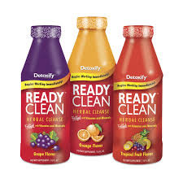

Detox / Cleanses
DETOXIFY READY CLEAN GRAPE, TROPICAL, ORANGE
- You can enjoy a healthier, cleaner body with Detoxify Ready Clean. Ready Clean is the herbal cleansing detox drink used by millions of satisfied people just like you. They cleansed their systems of toxins and impurities with Ready Clean, and so can you.
- Detoxify Ready Clean is the way to help lower the impurities your body absorbs every day.
PRODUCT INFO
- Pick your day for using your Ready Clean detox drink for intensive cleansing.
- Begin your cleansing program with Ready Clean.
- Shake the Ready Clean well and drink entire contents of the bottle.
- Ready Clean begins to immediately work to help support your body’s natural cleansing process.
- Wait 15 minutes. Refill the Ready Clean bottle with water — shake and drink.
- Urinate frequently. Frequent urination indicates that you are experiencing optimal cleansing with Ready Clean.
- Continue to drink plenty of water throughout the day to extend your cleansing program for hours.
TO FURTHER ENHANCE READY CLEAN’S EFFECTIVENESS
- Extend your intensive cleansing program with Ready Clean by taking PreCleanse Herbal capsules for the 2 days prior to using Ready Clean.
- Take Detoxify Constant Cleanse herbal capsules every day throughout the year. Periodic intensive cleansing is most effective when coupled with an ongoing detoxification routine.
- Eat light meals including fruits, vegetables, and fiber during your cleansing program with Ready Clean.
- Exercise regularly, and drink at least 12 8oz glasses of water in the days prior to using Ready Clean.
DOES READY CLEAN WORK?
With its powerful ingredients, Detoxify Ready Clean is the detox drink that has been effective for millions of people who are committed to cleansing. Simply follow Ready Clean’s guidelines for intensive cleansing and the Ready Clean directions, and you will experience optimal cleansing.
DETOXIFY READY CLEAN INGREDIENTS
Each 16oz Ready Clean detox drink contains our proprietary herbal blend. Ready Clean also includes:
- Vitamin A
- Vitamin C
- Vitamin D
- Thiamin
- Riboflavin
- Niacin
- Vitamin B6
- Folate
- Vitamin B12
- Biotin
- Pantothenic Acid
- Calcium
- Magnesium
- Zinc
- Selenium
- Chromium
- Potassium
- Creatine Monohydrate
READY CLEAN’S EXCLUSIVE HERBAL FORMULA IS:
- Nettle — Acts as a diuretic in Ready Clean to help release toxins from the body.
- Ginseng — Traditionally used to boost the immune, cardiovascular and metabolic systems.
- Dandelion — Herbalists use this potent herb to support healthy liver and gallbladder function.
- Milk Thistle — Included in Ready Clean to restore healthy liver function and minimize toxin damage.
- Uva Ursi — In Ready Clean to promote kidney and urinary health.
- Mullein Leaf — Acts as a tonic in Ready Clean to support the respiratory system and lungs.
- Stevia — A powerful cleansing herb in Ready Clean used by herbalists since ancient times.
- Fruit Fiber — Effective in Ready Clean for binding toxins and helping to eliminate them through the digestive tract.
MORE INFORMATION ON YOUR READY CLEAN DETOX DRINK
Detoxify Ready Clean was developed to help your body’s natural detoxification process safely and effectively reduce harmful impurities. Used properly, Detoxify Ready Clean’s proprietary blend of vitamins, minerals, herbs and fiber helps you achieve a cleaner, healthier lifestyle.
Pregnant or breastfeeding women should consult their physician before using Ready Clean detox drink.
Detoxify Ready Clean detox drink is a dietary supplement. Statements made about Ready Clean have not been evaluated by the Food and Drug Administration. This product is not intended to diagnose, treat, cure, or prevent any disease
RETURN & REFUND POLICY
All Sales are FINAL !!
SHIPPING INFO
I'm a shipping policy. I'm a great place to add more information about your shipping methods, packaging and cost. Providing straightforward information about your shipping policy is a great way to build trust and reassure your customers that they can buy from you with confidence.